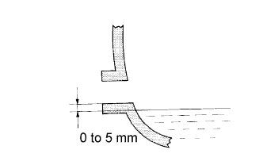

REAR DIFFERENTIAL CARRIER OIL SEAL > REPLACEMENT |
| 1. REMOVE REAR PROPELLER SHAFT ASSEMBLY |
Remove the rear propeller shaft assembly (Click here).
| 2. REMOVE REAR DRIVE PINION NUT |
 |
Using SST and a hammer, loosen the staked part of the rear drive pinion nut.
Using SST, hold the companion flange.
Using a 30 mm socket wrench, remove the rear drive pinion nut.
| 3. REMOVE REAR DRIVE PINION COMPANION FLANGE SUB-ASSEMBLY |
 |
Using SST, remove the rear drive pinion companion flange sub-assembly.
| 4. REMOVE REAR DIFFERENTIAL CARRIER OIL SEAL |
Using SST, remove the rear differential carrier oil seal.
| *1 | Oil Seal |
| *2 | Oil Slinger |
| 5. REMOVE REAR DIFFERENTIAL DRIVE PINION OIL SLINGER |
Remove the rear differential drive pinion oil slinger.
| 6. REMOVE REAR DRIVE PINION FRONT TAPERED ROLLER BEARING |
Using SST, remove the rear drive pinion tapered roller bearing (inner).
Using SST, tap out the rear drive pinion tapered roller bearing (outer).
| 7. REMOVE DIFFERENTIAL OIL STORAGE RING |
Using a screwdriver and hammer, tap out the differential oil storage ring.
| 8. REMOVE REAR DIFFERENTIAL DRIVE PINION BEARING SPACER |
| 9. INSTALL REAR DIFFERENTIAL DRIVE PINION BEARING SPACER |
 |
Install a new rear differential drive pinion bearing spacer.
| 10. INSTALL DIFFERENTIAL OIL STORAGE RING |
Using SST and a hammer, tap in a new differential oil storage ring.
| 11. INSTALL REAR DRIVE PINION FRONT TAPERED ROLLER BEARING |
 |
Using SST and a hammer, tap in the rear drive pinion front roller bearing (outer).
Install the rear drive pinion front roller bearing (inner).
| 12. INSTALL REAR DIFFERENTIAL DRIVE PINION OIL SLINGER |
Install the rear differential drive pinion oil slinger.
| 13. INSTALL REAR DIFFERENTIAL CARRIER OIL SEAL |
 |
Apply MP grease to the lip of a new oil seal.
Using SST and a hammer, tap in the rear differential carrier oil seal.
| *a | Oil Seal Depth |
| 14. INSTALL REAR DRIVE PINION COMPANION FLANGE SUB-ASSEMBLY |
 |
Using SST, install the rear drive pinion companion flange sub-assembly.
Using SST to hold the companion flange in place, install the rear drive pinion nut.
| 15. INSPECT DIFFERENTIAL DRIVE PINION PRELOAD |
 |
Using a torque wrench, measure the preload.
| Item | Specified Condition |
| New bearing | 0.83 to 2.18 N*m (9 to 22 kgf*cm, 8 to 19 in.*lbf) |
| Used bearing | 0.88 to 1.98 N*m (9 to 20 kgf*cm, 8 to 17 in.*lbf) |
| 16. STAKE REAR DRIVE PINION NUT |
 |
Using a chisel and hammer, stake the rear drive pinion nut.
| 17. INSTALL REAR PROPELLER SHAFT ASSEMBLY |
Install the rear propeller shaft assembly (Click here).
| 18. ADD DIFFERENTIAL OIL |
Remove the differential filler plug and gasket.
|  |
Pour oil into the differential carrier assembly so that the oil level is within 0 to 5 mm (0 to 0.197 in.) of the bottom of the filler plug opening.
| Oil Type and Viscosity | Specified Condition |
| Toyota Genuine Differential gear oil LT SAE 75W-85 API GL-5 or equivalent | 1.35 to 1.45 liters (1.43 to 1.53 US qts, 1.18 to 1.27 Imp. qts.) |
| Oil Type and Viscosity | Specified Condition |
| Toyota Genuine Differential gear oil LT SAE 75W-85 API GL-5 or equivalent | 2.65 to 2.75 liters (2.80 to 2.91 US qts, 2.33 to 2.42 Imp. qts.) |
Install a new gasket and the differential filler plug.
Drive the vehicle and check the oil level again.
If necessary, add differential oil.
| 19. CHECK FOR DIFFERENTIAL OIL LEAKAGE |